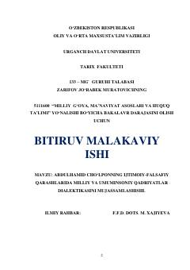

ACAbdulhamid Cho'lponning ijtimoiy-falsafiy qarashlari va qadriyatlar dialektikasiga bag'ishlangan ilmiy tadqiqot.
Mazkur bitiruv malakaviy ishida buyuk o'zbek adibi va ma'rifatparvari Abdulhamid Cho'lponning ijtimoiy-falsafiy qarashlari, uning ijodida milliy va umuminsoniy qadriyatlarning dialektik uyg'unligi ilmiy tahlil qilinadi. Shuningdek, Cho'lpon dunyoqarashining shakllanish shart-sharoitlari hamda uning jadidchilik harakatidagi o'rni ochib berilgan.